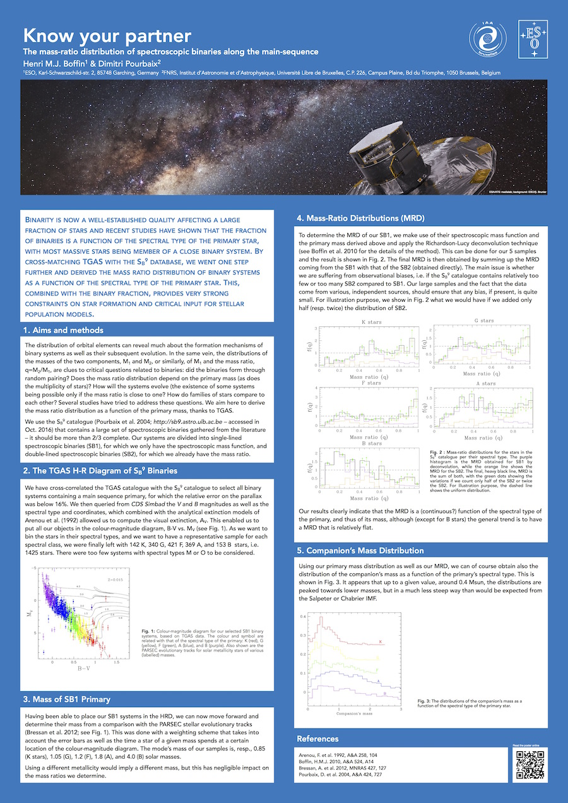

Know your partner
The mass-ratio distribution of spectroscopic binaries along the main sequence
Henri M.J. Boffin and Dimitri Pourbaix

Binarity is now a well-established quality affecting a large fraction of stars and recent studies have shown that the fraction of binaries is a function of the spectral type of the primary star, with most massive stars being member of a close binary system. By cross-matching TGAS with the SB9 database, we went one step further and derived the mass ratio distribution of binary systems as a function of the spectral type of the primary star. This, combined with the binary fraction, provides very strong constraints on star formation and critical input for stellar population models.
Here is the PDF of the poster at the IAU Symp. 330, Astrometry and Astrophysics in the GAIA sky, held in Nice, April 24-28, 2017, in low or in full resolution.
A first, different attempt at deriving the mass ratio distribution was done in Pourbaix et al. (2004) and a paper about the various methods is available here.